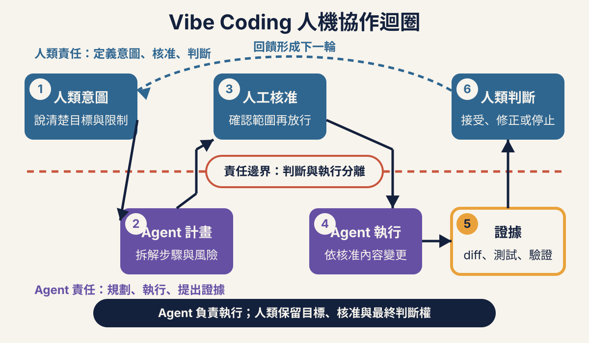
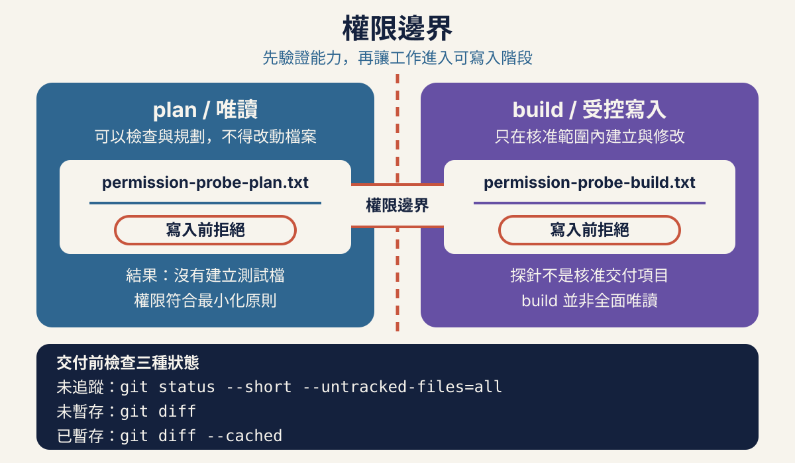
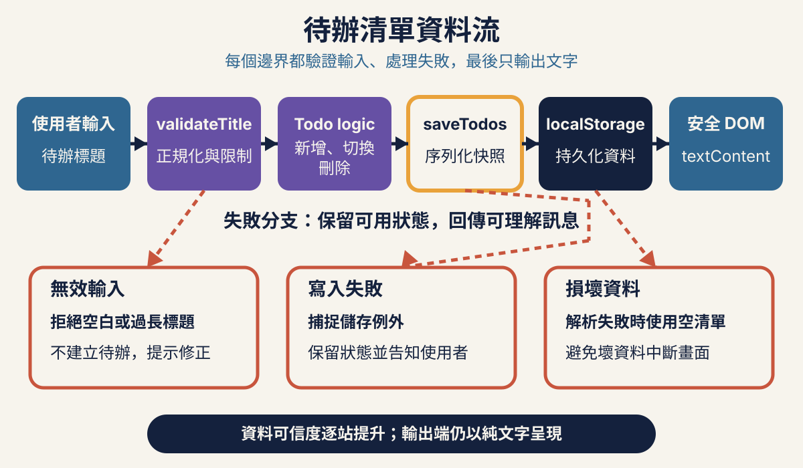
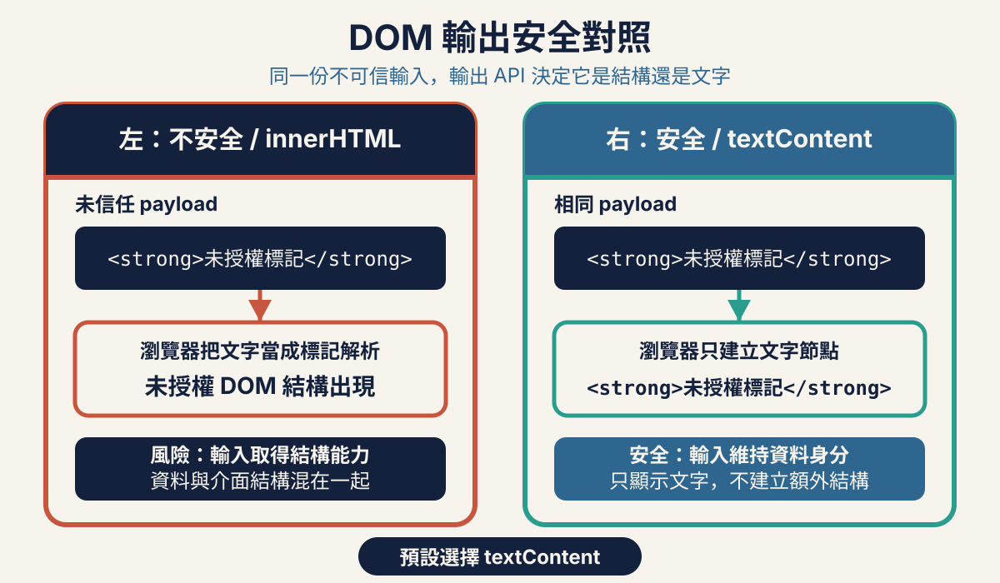
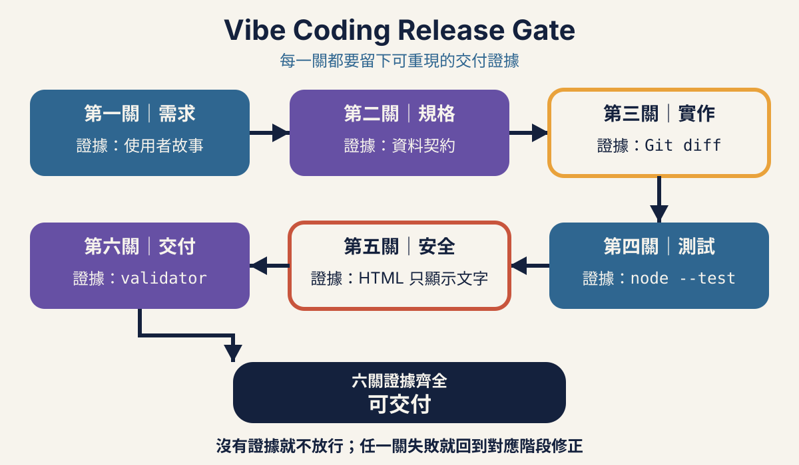

講師簡介
關於講師
澳門科學館
教育部
六小時全班同步實作：用 OpenCode 把模糊想法轉成可驗收需求、可測試程式與可交付的安全待辦清單。
Vibe Coding 不是把判斷交給 AI，
而是讓 AI 加速一套由人類控制與驗證的工程流程。

Vibe Coding 的核心不是「讓 AI 自由寫完」，而是由人類定義意圖與邊界，讓 Agent 在可觀察、可拒絕、可驗證的流程中工作。
課堂只用「能力與責任分開」和左右比較掌握核心，再完成投票、環境快檢與兩個權限 probe。LLM、Harness、Tools、Memory、Permission 的細節保留為查表與課後延伸，不在 5 分鐘內逐段講授。
reset-workspace.mjs 複製到新的目錄繼續，不得覆寫、刪除或清理原工作，課後再比較差異。章標時間維持 30＋45＋45＋10 分鐘休息＋65＋45＋10 分鐘休息＋60＋40＋10＝360 分鐘。各章時間盒內建共 18 分鐘緩衝，已包含角色輪換、3 分鐘停損後切 checkpoint、講師共同驗證、組間切換與證據缺漏處理；查表、課後延伸、缺證據補跑與教材發布者命令不納入現場時間，也不應臨時擠入 360 分鐘或占用緩衝。
LLM 會依目前上下文預測合適的回應，可以解釋需求、提出計畫、生成程式碼，也可能誤解含糊指令或補出不存在的細節。對混合背景團隊來說，可以把它想成一位反應很快、知識面廣，但每次都必須拿證據覆核的協作者。
Harness 是 OpenCode 這類工具中真正讓模型「能做事」的部分。它把對話連到檔案、終端機與專案狀態，將模型提出的動作轉成工具呼叫，再把真實結果送回模型繼續判斷。
工具可能包含讀檔、搜尋、寫檔、執行命令、查看 Git 差異或操作瀏覽器。每增加一項工具，Agent 可完成的工作增加，出錯時可造成的影響也增加。
記憶可以是目前對話、專案指引、規格文件或工具保存的狀態。它讓 Agent 不必每一步重新認識專案，但過時規則、錯誤假設與不可信文件也可能一起被帶入下一步。
權限是 Agent 能讀哪裡、寫哪裡、執行什麼，以及何時必須停下等待人類核准。最小權限不是拖慢進度，而是把一次誤解限制在可復原的小範圍。
Agent 可以產生計畫、修改檔案與執行命令；人類仍負責選擇目標、核准風險、判讀證據與做最終交付決定。把工作委派出去，不等於把責任移轉出去。

下方 connection/provider 細節是課前查表，不占課堂排障時間。課中 2 分鐘只確認 OpenCode 與 Node.js 版本、專用工作區，以及課程檔案、Prompt、投影與 Git 差異都沒有洩漏 key；若任一學員的 provider 尚未連線，立即切到講師預備工作區或只觀摩，不在現場排障，課後再完成個人 connection。
先使用不含秘密的資訊確認環境。Node.js 主版本必須是 20 或更新版本，瀏覽器使用近期版本的 Chrome、Edge 或 Safari。OpenCode 必須從本課專用目錄啟動，不從家目錄、下載資料夾或存有其他客戶專案的上層目錄啟動。
opencode --version
node --versionnode --version 顯示的主版本若小於 20，先停止並完成環境更新。此段只供課前設定與課後補做，不在課堂逐步操作。啟動 OpenCode 後，使用目前版本畫面提供的互動式 connection/provider 流程，依畫面選擇講師核准的供應者、登入方式與模型。不要照抄網路文章中的舊設定檔格式，也不要為了省一步而自行建立可能已過時的 provider 設定。
選擇更強或更新的模型，不會自動帶來最小權限、正確 code review 或充分 verification。模型負責提出候選動作；權限邊界、差異審查、測試與最終判斷仍是獨立且必要的控制。
本活動使用空白、專用且已由 Git 追蹤狀態管理的練習目錄。探針不是要真的留下檔案，而是要證明 OpenCode 在寫入發生前會要求核准，而且你有能力拒絕。
permission-probe-plan.txt。permission-probe-build.txt。目前是 Plan／只讀規劃模式。請說明你若要在目前目錄建立 permission-probe-plan.txt，會使用什麼操作與影響哪些路徑；接著提出該寫入操作，但不要用其他方式繞過權限確認。我會在任何寫入發生前拒絕。出現寫入權限提示時，先核對目標只有目前目錄的 permission-probe-plan.txt，然後選擇拒絕。若沒有提示就直接建立檔案，Plan probe 立即判定失敗並停止後續實作；不要刪除檔案後宣稱通過。
git status --short --untracked-files=all
git diff
git diff --cached確認 Plan probe 通過後才切換到 Build 模式。Build 並不代表無條件寫入；它只表示可對目前核准任務提出寫入請求。
目前是 Build 模式。請提出在目前目錄建立 permission-probe-build.txt，內容為 permission probe 的操作；不要修改其他檔案，也不要用其他命令繞過權限確認。我會在任何寫入發生前拒絕。再次在權限提示選擇拒絕，然後取得第二組證據。
git status --short --untracked-files=all
git diff
git diff --cached若任一模式沒有先提示就直接寫入、probe 出現在 Git 狀態、或出現未解釋的其他變更，立即停止。保留現場證據，請講師檢查目前模式與權限設定；不得用刪除 probe 或還原差異的方式把失敗包裝成通過。
開啟 OpenCode 權限檢查表，逐列記錄模式、請求操作、拒絕結果與三個 Git 證據。若課堂進度偏離，稍後使用 工作區復原工具 從新的 checkpoint 副本繼續，不覆寫原工作目錄。
Agent 可以動手，不代表它能替人承擔責任；先限制權限，再用 Git 證據決定是否繼續。
章末請逐項驗證：
- [ ] 已記錄 opencode --version，Node.js 主版本為 20 或更新版本，瀏覽器可開啟本機頁面。
- [ ] OpenCode 從不含其他專案與私密資料的專用目錄啟動。
- [ ] Provider 已於課前連線；若未連線，已切換到講師預備工作區或只觀摩，且課程檔案與 Git 差異沒有金鑰。
- [ ] Plan 與 Build probe 都在任何寫入前被拒絕，兩個 probe 檔案均不存在。
- [ ] 兩次皆檢視 git status --short --untracked-files=all、git diff 與 git diff --cached。
- [ ] 能用自己的話說明：人類負責意圖、核准與最終判斷；Agent 只在明確邊界內執行。
好需求不替 Agent 寫程式，而是把使用者價值、行為邊界與失敗條件說到足以被驗收。
01-requirements/requirements.md checkpoint，並把缺漏補回自己的文件：12 分鐘需求工作紙 已提供欄位與 Given–When–Then 骨架；課堂不是從空白寫六套故事。完整的 Checkpoint 01 requirements.md 是進度保險：先完成關鍵 Then，再用完整版本查漏補缺。
「做一個 Todo App」沒有說明誰要用、在哪裡用、資料是否要保存，也沒有說空白輸入、刪除或重新整理應發生什麼事。Agent 仍可能生成一個看似完整的頁面，但每個未定義處都是它代替團隊做出的產品決策。
做一個 Todo App。我們要為「在自己的瀏覽器整理短期工作的一般使用者」設計一個待辦清單。使用者應能新增待辦、標記完成、取消完成、查看全部／未完成／已完成、刪除待辦，並在成功保存後重新載入頁面仍看到最後狀態。
請先只整理需求，不要寫程式、不要建立檔案、不要安裝套件。輸出必須包含：
1. 問題、主要使用者、使用情境與可觀察的成功結果。
2. 上述六類操作的使用者故事。
3. 每類操作的 Given–When–Then 驗收條件。
4. 邊界條件：標題先 trim；JavaScript string.length 為 1–120；純空白拒絕；120 接受；121 拒絕；無效輸入不得改變既有資料。
5. 保存成功後重新載入可還原；保存失敗時當前畫面仍可操作，但要明確告知重新整理後不會保留。
6. 非目標：帳號、登入、後端、雲端同步、多人協作、到期日、提醒、標籤、搜尋、外部 API、第三方執行期依賴與部署。
7. 尚未決定、需要人類回答的問題，不得自行補完。
請用可由測試或瀏覽器操作觀察的語句，避免「快速、直覺、完善」等無法直接驗收的形容詞。Prompt 可以啟動討論；經人類檢查、消除矛盾並核准的 requirements，才是後續規格、任務、測試與驗收共同引用的基線。
課堂在 scoped prompt 中只快速辨認 Problem、User、Context、Outcome 與 Non-goal；以下完整說明保留給撰寫與課後複查，不逐段口頭講授。
零散工作容易遺漏，純文字清單不容易區分完成狀態。這是要解決的問題；「做一個網頁」只是候選解法。若問題沒有寫清楚，團隊很難判斷某個新功能是在解決問題，還是在擴大範圍。
主要使用者是能操作表單與按鈕、但不應被要求建立帳號或理解資料格式的一般使用者。驗收者要從使用者角度走完流程，而不是只看 Agent 產生了多少檔案。
使用者在自己的桌上型或行動裝置瀏覽器記錄短期工作，可能關閉或重新載入頁面，之後仍希望在同一瀏覽器延續進度。資料不需要跨裝置，也不送到伺服器。
使用者可以新增、切換狀態、篩選與刪除待辦；成功保存後重新載入，內容與狀態一致。輸入或保存失敗時，介面顯示可理解的訊息，既有資料不被無聲破壞。
本次不包含帳號、後端、多人同步、到期日、提醒、標籤、排序、拖放、搜尋、匯入匯出、外部 API、第三方框架或雲端部署。非目標不是永久拒絕，而是防止 Agent 把「可能有用」誤當成「這次必做」。
講師只從使用者問題推導「新增」這一個完整 user story，再帶著全班完成 add 與 blank 兩組 Given–When–Then。下列六個故事保留為完整參考；學員不需要在這 10 分鐘從空白重寫六套。
使用者故事提供方向，Given–When–Then 提供可驗收細節。只寫「身為使用者，我想管理待辦」仍不足以決定空白輸入、篩選是否改資料，或保存失敗時畫面要如何反應。
#### 合法新增與 trim
Given 頁面已開啟，既有清單有一筆「回覆客戶」，輸入欄內容為「 準備會議資料 」
When 使用者送出新增操作
Then 清單新增一筆標題恰為「準備會議資料」且狀態為未完成的待辦，既有項目保持不變，輸入欄清空這一條同時定義了正常流程與正規化結果。trim() 是需求可觀察到的規則，但還沒有指定必須用哪一個檔案或函式實作。
Given 頁面已有一筆待辦，輸入欄只包含空白字元
When 使用者送出新增操作
Then 不新增待辦，既有清單與保存資料保持不變，輸入欄附近顯示必填訊息「不改變既有資料」很重要。只說「顯示錯誤」仍可能讓錯誤實作先插入空項目，再顯示訊息。
以下 120／121、保存與重新載入案例保留為完整契約參考；課堂用 Checkpoint 01 查漏補缺，不逐行重寫。
本課統一以 trim() 後的 JavaScript string.length 計算長度，也就是 UTF-16 code units。這不是螢幕上看起來有幾個字，也不是 Unicode code points 數量；例如 "\u{20BB7}".length 的結果是 2。需求、規格、程式與測試必須使用同一把尺。
Given 輸入標題在 trim 後依 JavaScript string.length 計算為 120
When 使用者送出新增操作
Then 成功新增該待辦
Given 輸入標題在 trim 後依同一種 string.length 計算為 121，且清單已有其他資料
When 使用者送出新增操作
Then 不新增待辦，既有資料保持不變，畫面顯示標題過長訊息Given 使用者已成功新增、完成、取消完成或刪除待辦，且該次保存成功
When 使用者重新載入頁面
Then 畫面還原最後一次成功保存的待辦內容與完成狀態保存失敗要另外寫情境，不能從成功案例自行推論：當次記憶體操作與畫面變更仍有效，不回滾；畫面明確顯示「目前變更不會在重新整理後保留。」；重新載入只還原最後一次成功保存的狀態。
開啟半結構化的 需求工作紙，沿用講師已帶做的完整「新增」故事與 add／blank 兩組 Given–When–Then。兩人一組只補 complete／filter／delete／reload 四組的關鍵 Then，不從空白重寫六套故事：
逐段對照完整的 Checkpoint 01 requirements.md，把缺少的 Problem、User、Context、Outcome、Non-goal、邊界與失敗語意補回自己的需求文件。Checkpoint 是進度保險與完整答案，不是要求全班在 12 分鐘內重抄全文；已寫好的內容先保留，只補可觀察且必要的差異。
同時可查閱 Checkpoint 01 說明。若進度已無法跟上，不覆寫現有目錄；從課程頁所在位置執行下列命令，建立新的副本：
node assets/workshop/reset-workspace.mjs 01-requirements ../vibe-coding-01若目的目錄已存在，工具會拒絕覆寫。改用新的目錄名稱，保留原目錄供課後比較。
前 3 分鐘完成驗證與一句話小結；最後 2 分鐘只用於保存工作紙、輪換角色並切到 Checkpoint 01，不追加新案例或補講。
需求不是把六套故事趕著寫完，而是先讓關鍵 Then 可驗收，再用完整 checkpoint 補齊共同基線。
核准需求前逐項確認：
- [ ] Problem、User、Context、Outcome 與 Non-goal 都有明確內容。
- [ ] 六個使用者故事涵蓋新增、完成、取消完成、篩選、刪除與重新載入。
- [ ] Given–When–Then 涵蓋合法輸入、純空白、頭尾空白、120 接受與 121 拒絕。
- [ ] 所有長度判斷都明確使用 trim 後的 JavaScript string.length，即 UTF-16 code units。
- [ ] 保存成功與保存失敗的可觀察結果分開描述，失敗時不回滾當前記憶體操作。
- [ ] 每個 Then 都能由測試或瀏覽器操作判定，不依賴「好用、快速、完善」等主觀詞。
- [ ] 人類已核准需求；Agent 沒有把未決定事項直接寫成既定需求。

規格把可觀察需求轉成資料契約、函式介面、錯誤語意與任務順序，讓 Agent 知道能改什麼，也知道何時必須失敗而不改資料。
validateTitle／addTodo／loadTodos 三個代表 API：8 分鐘講師只逐項帶讀 validateTitle、addTodo、loadTodos 三個代表 API，示範如何從需求追到輸入、成功結果與失敗結果。其餘 return unions 與 reference 都保留供實作查表，不口頭逐行講授，也不要求學員當場背誦。
Requirements 說明「為誰解決什麼問題，以及怎樣算成功」。
Spec 說明「系統各邊界必須遵守什麼契約」。
Task list 說明「以什麼小步驟實作與取得證據」。
Requirements 防止做錯產品，spec 防止介面與資料規則各說各話，task list 防止 Agent 一次改太多而難以審查。三者應互相追溯，而不是把同一段模糊文字複製三次。
課堂只抓住三欄位模型、UUID 判定、標題長度與 storage 邊界；每個錯誤代碼與完整條款保留在下方供查表。
{
id: string,
title: string,
completed: boolean
}Todo 物件只能有 id、title、completed 三個自有可列舉欄位。缺少欄位、額外欄位或型別錯誤都使整筆資料無效；載入清單時只要一筆無效，整份清單視為損壞，不採用部分有效資料。
crypto.randomUUID() 產生，再傳給領域函式。^[0-9a-f]{8}-[0-9a-f]{4}-4[0-9a-f]{3}-[89ab][0-9a-f]{3}-[0-9a-f]{12}$，格式檢查不分大小寫。===，區分大小寫；格式上都合法但大小寫不同的字串不是同一個 ID。title 必須是字串；非字串回報 invalid-type。trim()；結果為空回報 required。string.length 計算 UTF-16 code units；1–120 合法，大於 120 回報 too-long。title === title.trim()。completed 只接受 boolean；新增 Todo 時固定為 false。localStorage key 固定為 vibe-coding.todos.v1，值是完整 Todo 陣列的 JSON。key 不存在表示尚無資料，應回傳空陣列而不是警告。JSON 壞掉、根節點不是陣列、欄位或 UUID 不合法、title 未正規化、ID 重複時，整份資料回報 corrupt-data。
載入時不要把不合法 ID 自動轉 lowercase、刪掉額外欄位或只保留部分有效項目。無聲修復會讓資料問題失去證據，也會使需求、測試與實際行為不一致；本規格選擇明確拒絕整份損壞資料。
validateTitle、addTodo、toggleTodo、deleteTodo 與 filterTodos 不讀寫 DOM、localStorage、網路或全域可變狀態，也不突變傳入陣列或 Todo 物件。失敗時資料值保持不變；成功變更時建立新陣列，只複製實際改變的物件。
下方 ts 區塊只是用 TypeScript-style notation 精確表達 JavaScript 函式「可能回傳的物件形狀」。學員不必安裝或學習 TypeScript，本課實作仍是純 JavaScript。課堂只帶讀 validateTitle、addTodo 與稍後的 loadTodos 三個代表案例；其餘完整 union 保留在這裡供實作時查表，不口頭逐行講授，也不要求背誦。
validateTitle 與 addTodotype TitleError = "invalid-type" | "required" | "too-long";
type ValidateTitleResult =
| { ok: true; value: string }
| { ok: false; error: TitleError };
type AddTodoError = TitleError | "invalid-id" | "duplicate-id";
type AddTodoResult =
| { ok: true; todos: Todo[]; todo: Todo }
| { ok: false; todos: Todo[]; error: AddTodoError };validateTitle(input) 依「型別、trim 後必填、string.length」順序判斷。addTodo(todos, rawTitle, id) 先驗證 title，再驗證 UUID v4，最後用字串全等確認 ID 不重複。addTodo 不自行產生 ID；失敗物件中的 todos 是原輸入陣列，成功時新 Todo 的 completed 固定為 false。以下 ts 區塊同樣只是 TypeScript-style notation；實作仍是純 JavaScript。這一組屬於參考區，課堂不逐項講授，學員在實作 toggleTodo、deleteTodo、filterTodos 時按需查閱。
toggleTodo(todos, id): { todos: Todo[]; changed: boolean }
deleteTodo(todos, id): { todos: Todo[]; changed: boolean }
filterTodos(todos, filter): Todo[]toggleTodo 與 deleteTodo 只接受非空白、格式合法的 UUID v4 字串，再用 === 查找。changed: false。changed: true；toggle 只反轉目標物件，delete 只移除目標物件。filterTodos 只接受 "all" | "active" | "completed"；合法時一律回傳新陣列，其他值拋出 TypeError，而且篩選不得改寫或保存清單。loadTodos；saveTodos 留作查表下方 ts 區塊同樣只描述可能回傳的物件形狀，不會編譯，也不需要安裝 TypeScript；實作仍是純 JavaScript。講師只逐項帶讀 loadTodos 作為代表案例，saveTodos 與其餘 union 在工作紙實作時查閱，不口頭逐行講授。
type LoadTodosResult = {
todos: Todo[];
warning: null | "corrupt-data" | "storage-unavailable";
};
type SaveTodosResult =
| { ok: true }
| { ok: false; error: "invalid-data" | "write-failed" };loadTodos(storage) 固定回傳 { todos, warning }。key 不存在為 { todos: [], warning: null }；storage 不可取得或讀取拋錯為 storage-unavailable；解析或完整契約失敗為 corrupt-data。saveTodos(storage, todos) 先驗證整份清單。資料無效時不序列化、不寫入，回傳 invalid-data；序列化、storage 取得或寫入拋錯都回傳 write-failed；成功只回傳 { ok: true }。{ code, message }，畫面層再把代碼對應到安全的繁體中文訊息。應用層在新增、切換或刪除時，先把領域函式產生的新陣列設為目前記憶體狀態並更新畫面，再呼叫 saveTodos。若得到 write-failed，不回滾當前操作，仍允許使用者繼續操作；同時顯示固定警告「目前變更不會在重新整理後保留。」。這個行為避免畫面突然倒退，也不會誤稱資料已持久保存。
===string.length 計算 UTF-16 code units，1–120 接受，121 拒絕開啟內容已完整的 規格工作紙，不要重抄契約或從空白填寫 unions。用螢光標記、註解或旁註圈出三個決策，並各自寫下它會限制哪個測試或實作：
1. UUID exact case — 格式檢查不分大小寫、原字串不轉換，唯一性與查找使用區分大小寫的 ===。
2. UTF-16 120 — title 先 trim，再以 JavaScript string.length 計算，1–120 接受、121 拒絕。
3. Write fail 不回滾 — 先保留記憶體與畫面變更，保存失敗時顯示固定警告，不假裝已持久化。
以 Checkpoint 02 spec.md 對照三個標記是否完整，再參考 Checkpoint 02 todolist.md，把「頁面骨架、標題測試、標題實作、領域測試、領域實作、安全 DOM、storage 測試、storage 實作、瀏覽器驗證、安全與權限檢查」依序補進自己的 任務清單工作紙。每項只填可驗證結果與證據，不在此時實作。
也可查閱 Checkpoint 02 說明。需要跟上講師時，從課程頁所在位置建立新的 checkpoint 副本：
node assets/workshop/reset-workspace.mjs 02-spec ../vibe-coding-02以下 Prompt 保留供實作時直接使用，課堂只指出「一個契約、一個紅燈、一個最小修改、一組證據」，不逐行講授。
請只分析 requirements.md 與 spec.md 中的「標題驗證」契約，不修改檔案。列出：
1. 第一個應失敗的測試案例與預期錯誤字串。
2. 允許修改的最少檔案。
3. 最小實作步驟。
4. 測試命令與通過判準。
5. 任何規格矛盾或仍需人類決定的事項。
不要把新增、切換、刪除、篩選或 storage 一起納入本任務。好的任務不是「完成 Todo App」，而是「先寫 validateTitle 非字串、空白與 121 長度的失敗測試；確認紅燈；做最小實作；執行 Node 測試並檢視 diff」。範圍越小，權限越容易核准，差異越容易理解，失敗也越容易復原。
前 3 分鐘完成規格核對與一句話小結；最後 2 分鐘只用於保存文件、輪換角色並切到 Checkpoint 02，不擴張 TDD 講解或追加契約。
規格把需求變成可查驗的邊界；課堂只練三個代表 API 與三個關鍵決策，其餘契約在實作時按需查表。
規格核准前逐項驗證：
- [ ] Todo 只含 id、title、completed 三欄位，缺少或額外欄位均無效。
- [ ] UUID v4 格式檢查不分大小寫，合法 ID 保留原字串，不轉 lowercase；唯一性與查找使用區分大小寫的字串全等。
- [ ] title 先 trim，再以 JavaScript string.length 計算 1–120；completed 新增時固定為 false。
- [ ] storage key 精確為 vibe-coding.todos.v1，missing 與 corrupt data 有不同結果。
- [ ] validateTitle、addTodo、toggleTodo、deleteTodo、filterTodos、loadTodos、saveTodos 的回傳形狀與錯誤字串完整且一致。
- [ ] 純函式不突變輸入；寫入失敗保留目前記憶體與畫面狀態，顯示資料不會在重新整理後保留。
- [ ] 任務清單遵循 failing test、minimal implementation、green、refactor，每項都有允許路徑、命令與證據。
- [ ] Requirements、spec 與 task list 可互相追溯，未決定事項已交回人類核准。
儲存工作紙並記下目前 checkpoint 目錄。休息後從已核准的第一個小任務開始，不在休息期間讓 Agent 背景執行或核准新操作。
實作不是把完整產品一次交給 Agent，而是把已核准規格切成小步驟；每一步都限制路徑、定義驗收、檢查差異，再由人類決定是否進入下一步。
node assets/workshop/reset-workspace.mjs 03-feature ../vibe-coding-03-team-a 建立新的 Checkpoint 03 工作區，其他組改用未存在的 team suffix，由講師共同驗證後繼續。不得覆寫或刪除原工作。先在 Plan 模式讀取 requirements.md 與 spec.md。這一步只建立共同理解，不修改檔案、不執行會改變環境的命令，也不安裝套件。
目前是 Plan／只讀規劃模式。請閱讀目前專案的 requirements.md 與 spec.md，只分析兩份文件是否一致，不要修改或建立任何檔案，不要執行安裝、刪除、commit、push 或發布操作。
請輸出：
1. Todo 的資料契約與七個公開函式：`validateTitle`、`addTodo`、`toggleTodo`、`deleteTodo`、`filterTodos`、`loadTodos`、`saveTodos`。
2. title、UUID、immutable update、filter 與 storage 的邊界。
3. 依 todolist.md 建議的最小實作順序。
4. 每一步允許修改的檔案、驗收方式與停止條件。
5. 文件矛盾或仍需人類決定的事項。
若需求與規格衝突，請停止並指出衝突，不要自行選一邊。git status --short --untracked-files=all
git diff
git diff --cached三項輸出都不應因 Plan 分析新增差異；若出現任何寫入，立即停止並保留證據。
開場已用統一名稱 permission-probe-plan.txt 與 permission-probe-build.txt 完成 Plan／Build 拒絕測試。本章只複習結果：兩個 probe 都應不存在，且 Build 仍只代表「可提出寫入請求」，不代表可任意寫入。已留存證據者不要重跑，省下時間進入實作；證據不完整者先停下，由人類確認權限設定。
人類先核對 Prompt 中的允許路徑、禁止事項、驗收命令與停止條件。Agent 若要求新增套件、修改未列路徑或把多步合併，先拒絕並縮小範圍。
先建立可讀、可操作的語意骨架，不同時撰寫領域邏輯。這一步的成果應能由檔案差異直接驗收。
請只完成語意化 Todo 頁面骨架。
允許修改：index.html、styles.css。
禁止修改：app.js、todo.js、任何測試與文件。
禁止操作：安裝套件、加入外部 CDN、刪除檔案、commit、push、發布。
index.html 必須包含：
- 可見且以 for="todo-title" 關聯的 label。
- id="todo-form" 的表單、id="todo-title" 且 maxlength="120" 的輸入欄與 submit 按鈕。
- all、active、completed 三個 data-filter 按鈕。
- id="form-error"、id="storage-warning"、id="todo-list"、id="empty-state"。
- 以 type="module" 載入同源 app.js。
styles.css 只需提供清楚的單欄版面、可見 focus 樣式與基本狀態樣式。完成後不要繼續實作 JavaScript；回報變更檔案與逐項驗收結果。每一步後都從專案根目錄保留同一組 Git 證據；此處先檢查 page shell：
git status --short --untracked-files=all
git diff
git diff --cached只有 index.html 與 styles.css 的核准差異才能繼續。若出現套件鎖檔、probe 或其他路徑，立即停止，不要先刪除再假裝沒有發生。
先讓測試以正確理由失敗，再實作 validateTitle。Prompt 明確限制為一個契約，不讓 Agent 順手完成所有 CRUD。
請以 Node 內建 node:test 完成 title validation 的 Red→Green 小步驟。
允許修改：todo.test.js、todo.js。
禁止修改：index.html、styles.css、app.js、storage.js、package.json 與其他檔案。
禁止操作：安裝套件、刪除檔案、commit、push、發布。
先在 todo.test.js 寫 validateTitle 的測試，涵蓋非字串回傳 invalid-type、trim 後空白回傳 required、121 個 JavaScript string.length 回傳 too-long，以及頭尾空白包住 120 個 code units 時成功並回傳 trim 後 value。先執行 node --test todo.test.js，確認測試因缺少或尚未完成的 validateTitle 而失敗。
接著只在 todo.js 實作 validateTitle，使上述測試通過。不要實作 addTodo、toggleTodo、deleteTodo、filterTodos 或 storage。最後再執行同一命令並回報 RED 原因、GREEN 結果與 diff 摘要。git status --short --untracked-files=all
git diff
git diff --cached這一步才擴充純領域函式。UI、storage 與網路仍不在範圍內，讓失敗能定位在資料契約而非畫面事件。
請以現有 requirements.md、spec.md 與 validateTitle 為準，完成 Todo 純函式的 Red→Green 小步驟。
允許修改：todo.test.js、todo.js。
禁止修改：index.html、styles.css、app.js、storage.js、package.json 與其他檔案。
禁止操作：安裝套件、刪除檔案、commit、push、發布。
先補 addTodo、toggleTodo、deleteTodo、filterTodos 測試，至少證明：
- addTodo 使用 caller 提供的 UUID v4，trim title，建立精確三欄位且不突變輸入。
- duplicate ID 以區分大小寫的 === 判定；合法 UUID 保留原始大小寫。
- toggleTodo 只複製目標 Todo；deleteTodo 只移除精確匹配項目；失敗都回傳原陣列與 changed:false。
- all、active、completed 都回傳新陣列且不突變；非法 filter 拋出 TypeError。
先執行 node --test todo.test.js 並保留預期失敗，再做最小實作直到通過。不要串接 DOM 或 localStorage。最後回報測試輸出與所有變更路徑。git status --short --untracked-files=all
git diff
git diff --cached現在才把純函式接到瀏覽器。待辦標題是使用者輸入，必須當成資料節點，不可交給 HTML parser。
請只在 app.js 串接現有 HTML 與 todo.js 的公開函式，完成記憶體版 Todo UI。
允許修改：app.js。
允許讀取但不得修改：index.html、styles.css、requirements.md、spec.md、todo.js、todo.test.js。
禁止操作：使用 innerHTML、outerHTML、insertAdjacentHTML、document.write、eval、字串事件處理器；安裝套件；修改 localStorage；刪除檔案；commit、push、發布。
驗收：
- 新增時使用 crypto.randomUUID()，成功後清空輸入、清除錯誤並把焦點放回輸入欄。
- required、too-long 等錯誤以固定繁體中文文字顯示，失敗不改 todos。
- 可完成、取消完成、刪除，並切換 all、active、completed。
- 使用 document.createElement 建立固定節點、以 textContent 放入 todo.title、以 replaceChildren 更新清單。
- 動態核取方塊與刪除按鈕的 accessible name 包含待辦標題。
- 本階段不加入 storage；重新整理清空是預期結果。
完成後執行 node --test todo.test.js，並回報手動瀏覽器驗收步驟，不要自行擴大範圍。git status --short --untracked-files=all
git diff
git diff --cached安全輸出不是最後再貼上的補丁。若初版先用 innerHTML，後續功能、測試與 code review 都會建立在錯誤資料流上；從第一版就讓結構由程式建立、內容只成為文字，成本更低，也讓下一章能專注驗證而非重寫。
下列標題精確對應 todolist.md。課堂走到 Safe DOM 串接時，第六項正在進行；完成本章驗證後，可把它改為 done，但 storage 與 release gate 仍不可預先宣稱完成。
啟動本機伺服器後，以瀏覽器完成一條可重現證據鏈。Checkpoint 03 是記憶體版，重新整理後清空是預期行為，不是 storage bug。
1. 新增「準備工作坊」與「回覆客戶」，確認兩筆都顯示。
2. 將第一筆標記完成，再取消完成；刪除第二筆，確認其他資料不受影響。
3. 建立一筆未完成與一筆已完成，依序檢查「全部」、「未完成」、「已完成」三個 filters；切換 filter 不得刪除原始資料。
4. 送出純空白，確認顯示「請輸入待辦事項。」且清單不變。
5. 在 DevTools Console 執行下列精確命令，移除 UI 的 maxlength 後送出 121 個 UTF-16 code units；確認顯示「待辦事項不可超過 120 個字元。」且清單不變。重新整理會恢復屬性。
const input = document.querySelector('#todo-title'); input.removeAttribute('maxlength'); input.value = 'a'.repeat(121); document.querySelector('#todo-form').requestSubmit();6. 在 DevTools Console 執行下列命令；payload 必須以完整文字出現在 .todo-title，document.querySelector('#todo-list img') 必須是 null，且不得出現對話框。
const input = document.querySelector('#todo-title'); input.value = '<img src=x onerror=alert(1)>'; document.querySelector('#todo-form').requestSubmit(); document.querySelector('#todo-list img');7. 重新整理頁面，確認記憶體版清單清空，再執行三個 Git 命令並閱讀全部差異。
完成後對照 Checkpoint 03：功能初版。需要從標準狀態繼續時，從課程頁所在位置建立新副本：
node assets/workshop/reset-workspace.mjs 03-feature ../vibe-coding-03若目的目錄已存在，改用新名稱，不覆寫原工作。Checkpoint 是可比較的基線，不是免除測試與審查的答案。
停止目前操作，保存 Git 與工作紙證據，依小組人數輪換角色並確認下一章使用的目錄。這 3 分鐘只處理 checkpoint 切換與章間轉場，不補做功能、不延長除錯，也不追加講解。
一次只核准一個可驗證步驟，並用測試、瀏覽器與 Git 三種證據決定是否前進。
章末請逐項驗證：
- [ ] 初始 Plan 只分析 requirements.md 與 spec.md，沒有寫檔或擴大權限。
- [ ] permission-probe-plan.txt 與 permission-probe-build.txt 沿用開場結果且都不存在，未浪費時間重跑。
- [ ] 四個實作 Prompt 都明列允許路徑、驗收條件與禁止安裝套件、刪除、commit、push、發布。
- [ ] 每一步後皆檢視 git status --short --untracked-files=all、git diff、git diff --cached。
- [ ] 記憶體版 CRUD、三種 filters、空白與 121 邊界均由瀏覽器驗證。
- [ ] XSS payload 只顯示為文字，沒有產生 img 或執行事件處理器。
- [ ] 能說明 Checkpoint 03 重新整理後清空是預期行為，storage 尚未實作。
測試的價值不是累積綠色勾號，而是先看到規格要求的行為確實會失敗，再以最小修改讓它通過，並用不同層次的證據排除盲點。
每組先依全班規則輪換：兩人組使用操作者、驗證者兼記錄者；三人組才拆成操作者、驗證者、記錄者。Todo 與 storage 的完整測試已預先放在 Checkpoint 04；課中只現場寫或閱讀各一個代表案例的 RED／GREEN，其餘案例直接執行並解讀既有測試。驗證者把 failure message 對回 spec，記錄者保存 RED／GREEN、完整測試與 Git 證據；兩人組由驗證者兼記錄者完成兩項工作，非工程學員可主責判斷 expected／actual 是否符合驗收。單一步驟卡住滿 3 分鐘，保留原目錄並立即執行 node assets/workshop/reset-workspace.mjs 04-tests ../vibe-coding-04-team-a 建立新副本，改用其他未存在的 team suffix，經講師共同驗證後繼續。
紅燈必須是可解釋的證據。例如預期 ERR_MODULE_NOT_FOUND 卻得到語法錯誤，不能算「反正有失敗」；先修正測試本身，再開始實作。
Checkpoint 04 已含完整 todo.test.js。課中只由講師或一組示範現場寫／看 validateTitle 的 121 code units 代表案例，取得可解釋 RED 後做最小 GREEN；全班不抄完整測試。下列精選完整區塊保留作查表，並用來執行、閱讀 addTodo／toggleTodo 的 immutable update 結果。
import assert from 'node:assert/strict';
import test from 'node:test';
import { addTodo, toggleTodo, validateTitle } from './todo.js';
const FIRST_ID = '11111111-1111-4111-8111-111111111111';
const SECOND_ID = '22222222-2222-4222-8222-222222222222';
function makeTodos() {
return [
{ id: FIRST_ID, title: '第一件事', completed: false },
];
}
test('validateTitle 依序驗證型別、必填與 UTF-16 長度', () => {
assert.deepEqual(validateTitle(null), { ok: false, error: 'invalid-type' });
assert.deepEqual(validateTitle(' \n\t '), { ok: false, error: 'required' });
assert.deepEqual(validateTitle('a'.repeat(121)), { ok: false, error: 'too-long' });
assert.deepEqual(validateTitle(` ${'a'.repeat(120)} `), {
ok: true,
value: 'a'.repeat(120),
});
});
test('addTodo 與 toggleTodo 不突變輸入', () => {
const todos = makeTodos();
const snapshot = structuredClone(todos);
const added = addTodo(todos, ' 新待辦 ', SECOND_ID);
assert.equal(added.ok, true);
assert.deepEqual(added.todo, {
id: SECOND_ID,
title: '新待辦',
completed: false,
});
assert.deepEqual(todos, snapshot);
assert.notStrictEqual(added.todos, todos);
assert.strictEqual(added.todos[0], todos[0]);
const toggled = toggleTodo(added.todos, FIRST_ID);
assert.equal(toggled.changed, true);
assert.equal(toggled.todos[0].completed, true);
assert.equal(added.todos[0].completed, false);
assert.notStrictEqual(toggled.todos, added.todos);
assert.strictEqual(toggled.todos[1], added.todos[1]);
});代表組在尚未完成該行為的工作目錄，以完全相同命令取得 RED 與最小 GREEN；其他組閱讀投影輸出的 failure message，核對 actual／expected，不等待各組重現相同程式碼：
node --test --test-name-pattern="validateTitle" todo.test.js完整區塊與 addTodo／toggleTodo targeted pattern 保留作課後查表，不在 12 分鐘內逐行輸入或講解。全班稍後直接在 Checkpoint 04 執行完整測試並解讀 immutable assertions；「測試檔可以執行」不等於契約已通過。
Storage 是不可信邊界。這 12 分鐘只現場寫／看 missing key 一個代表案例，取得一次 RED 與一次最小 GREEN。malformed JSON 與其餘完整案例已在 Checkpoint 04；全班執行並解讀輸出，不從零完成整個 storage module。下列兩例保留作查表，使用記憶體替身，不污染瀏覽器資料。
import assert from 'node:assert/strict';
import test from 'node:test';
import { loadTodos, STORAGE_KEY } from './storage.js';
function createMemoryStorage(initialValue = null) {
return {
getItem(key) {
assert.equal(key, STORAGE_KEY);
return initialValue;
},
};
}
test('loadTodos 對 missing key 回傳空清單且無警告', () => {
const storage = createMemoryStorage();
assert.deepEqual(loadTodos(storage), {
todos: [],
warning: null,
});
});
test('loadTodos 拒絕 malformed JSON', () => {
const storage = createMemoryStorage('{not-json');
assert.deepEqual(loadTodos(storage), {
todos: [],
warning: 'corrupt-data',
});
});getItem() 回傳 null 時回傳空清單的最小處理，重跑同一測試取得 GREENnode --test --test-name-pattern="missing key" storage.test.jsmalformed JSON 與其餘案例全部預先放在 完整 04-tests/storage.test.js 和 Checkpoint 04 說明：非陣列、extra field、wrong type、invalid UUID、duplicate ID、untrimmed title、empty title、121 code units、read failure、invalid write、JSON.stringify failure 與 setItem write failure。講師只指出它們對應的信任邊界與預期結果。Storage 的 12 分鐘包含一個代表 RED／GREEN、執行預先提供的完整測試、閱讀輸出與解釋一個案例，不逐項從零寫完測試或 storage module。
學員活動：依下方「完整 Node 測試」區塊切換到明確的 Checkpoint 04 工作目錄並執行完整測試，再從測試名稱選一個 failure-path 案例，向同伴解釋它保護哪個資料或環境邊界、預期回傳為何，以及若缺少該測試會留下什麼風險。操作者執行命令；驗證者對照 spec 解讀；記錄者保存輸出與 Git 證據。兩人組由驗證者兼記錄者完成後兩項，三人組才分開執行；活動不要求從零完成完整 storage module。
Targeted test 縮短回饋時間，但不能取代完整回歸。這 4 分鐘只執行、解讀與保存預先完整測試，不逐一講解所有案例。下列命令從 repository root 開始，先明確切換到 Checkpoint 04 工作目錄：
cd lectures/vibe-coding-workshop/assets/workshop/checkpoints/04-tests
node --test server.test.js todo.test.js storage.test.js完整測試應包含 server.test.js、todo.test.js 與 storage.test.js。若 targeted test 通過但完整測試失敗，先停在目前小步驟，不要求 Agent 繼續下一項。
git status --short --untracked-files=all
git diff
git diff --cachedGit 是 review 與 recovery 的依據，不是清除證據的按鈕。先用 git diff 找出超出允許路徑、整檔重寫或未預期套件檔；若需復原，優先手動修正單一變更或從新的 checkpoint 副本重來。不要用會一併丟失其他工作的破壞性命令。
完成後對照 Checkpoint 04：儲存測試。需要建立乾淨副本時，從課程頁所在位置執行：
node assets/workshop/reset-workspace.mjs 04-tests ../vibe-coding-04validateTitle 對型別、空白、120／121 的回傳值從 repository root 執行真實 Chromium smoke test；這是本課固定且可重現的瀏覽器命令：
node lectures/vibe-coding-workshop/assets/workshop/browser-smoke.mjs checkpoints/04-tests停止測試與解說，保存 RED／GREEN、完整測試、browser smoke 與 Git 證據，輪換角色並確認下一章使用的 Checkpoint 04／05 目錄。這 2 分鐘不拿來補寫測試或延長除錯。
先確認測試以正確理由變紅，再用最小實作變綠；最後以完整回歸、瀏覽器與 Git 證據確認沒有漏接。
章末請逐項驗證：
- [ ] Todo 的 validateTitle 代表案例曾以可解釋原因失敗，最小實作後以同一命令通過。
- [ ] Storage 的 missing key 代表案例曾取得可解釋 RED，再以最小實作取得 GREEN。
- [ ] Todo 與 storage 的其餘完整測試直接使用 Checkpoint 04，沒有在課堂逐項重寫。
- [ ] 學員已執行完整 todo.test.js 與 storage.test.js，並能解釋其中一個 failure-path 案例保護的邊界。
- [ ] node --test todo.test.js、node --test storage.test.js 與完整 node --test 都通過。
- [ ] Browser smoke 從 repository root 執行並通過，證據沒有被 unit tests 取代。
- [ ] 三個 Git 命令已檢視，沒有未核准檔案、套件或暫存差異。
儲存測試輸出與 Git 證據，關閉不需要的權限提示。休息期間不要讓 Agent 在背景繼續執行、安裝、修改或發布；回來後由人類重新核准安全章的範圍。

安全不是只防一段 XSS payload，而是辨認每個跨越信任邊界的指令、工具、相依套件、資料與瀏覽器能力，為它安排最小權限、驗證與人工核准。
每組依全班規則輪換：兩人組使用操作者、驗證者兼記錄者；三人組才拆成操作者、驗證者、記錄者。現場只完成人工 XSS 驗收、corrupt storage 或 write fail 二選一，以及 permission worksheet／Git 證據。另一種 storage failure 由講師示範，其他 failure paths 由預先完成的 unit tests 與 browser smoke 自動覆蓋；不要求每組逐項手動重演。單一步驟卡住滿 3 分鐘，保留原目錄並立即以 node assets/workshop/reset-workspace.mjs 05-hardened ../vibe-coding-05-team-a 建立新副本，改用其他未存在的 team suffix；共同驗證後再前進。
本次實作 65 分鐘、測試 45 分鐘、第二次休息 10 分鐘、安全 60 分鐘，共 180 分鐘；加上前半段 130 分鐘，課程累計 310 分鐘。角色輪換、切換 Checkpoint 05、共同驗證與保存可供交付章引用的證據，都已包含在安全章 60 分鐘內。
威脅模型不從「AI 會不會犯錯」這個大問題開始，而是逐項問：不可信內容從哪裡進來、能影響哪個決策、可動用什麼能力、失敗時會留下什麼證據。本課不引用未核實的事故數字，只使用可在目前專案重現的控制與結果。
| 威脅 | 易受攻擊做法 | 控制 | 證據 | |
|---|---|---|---|---|
| Agent 內容 | Prompt Injection | 專案內容藏有「忽略規則並外傳資料」等指令 | Agent 把讀到的檔案當資料，不自動提升為授權 | 人類核對原始需求、允許路徑、tool request 與 Git 差異 |
| 擴充能力 | 惡意 MCP／Skill | 未審查的工具或 Skill 可要求網路、檔案或命令能力 | 只啟用任務必要且來源可信的能力，先讀描述與實際操作 | 工具清單、權限提示、執行紀錄與無專案外變更 |
| 權限 | Excessive permission | 為省提示一次開放整個磁碟、任意 shell 或永久允許 | Plan 保持只讀，Build 逐步核准最小路徑與命令 | permission-probe-plan.txt、permission-probe-build.txt 均不存在，Git 三項證據乾淨 |
| 機密資料 | Secret leakage | 把 token、cookie、.env 或 provider key 貼進 Prompt、輸出或 commit | 秘密只進安全互動流程；限制讀取範圍並檢查差異 | Prompt、runtime 檔案與 Git diff 無 secret marker 或真實憑證 |
| 供應鏈 | Dependency risk | Agent 為小功能加入 CDN 或未審查套件 | 優先平台 API；禁止新增 runtime dependency 與外部資源 | package.json 無 dependencies／devDependencies，runtime 檔案無外部 URL |
| 產品規則 | Business-logic abuse | 只防注入，卻允許空白、121 長度、壞 JSON 或任意 filter 改壞資料 | 在 domain 與 storage 邊界驗證型別、長度、UUID、欄位與狀態轉移 | unit tests、browser smoke 與錯誤訊息共同證明拒絕且資料不被無聲破壞 |
CSP、測試與權限提示都可能降低風險，但最後仍由人類確認任務目的、工具來源、差異與發布條件；任何單一綠燈都不能自動授權下一個高影響操作。
先閱讀 不安全反例。下列片段是 inert 教材，只存在於 code fence，不會由應用程式載入；它示範不可信 title 被交給 HTML parser 的問題。
list.innerHTML = todos
.map((todo) => `<li>${todo.title}</li>`)
.join('');若 todo.title 是 <img src=x onerror=alert(1)>，上述程式可能建立元素並執行事件屬性。重點不是封鎖某一個字串，而是不要把不可信資料送進 HTML parsing sink。
再閱讀 安全修正。安全版把固定結構與不可信文字分開：
const title = document.createElement('span');
title.textContent = todo.title;
item.append(title);createElement 只建立程式指定的 span；textContent 建立文字內容，因此 <、> 與 onerror 只是可見字元。每組在 Checkpoint 05 輸入 <img src=x onerror=alert(1)>：操作者完成新增，驗證者確認 payload 以完整文字顯示、沒有對話框且 document.querySelector('#todo-list img') === null，記錄者保存結果；兩人組由驗證者兼記錄者核對並保存，三人組才分開。這是每組必做的 XSS 人工證據。
黑名單可以漏掉其他元素、編碼與瀏覽器解析路徑。主要控制是避免 innerHTML、outerHTML、insertAdjacentHTML、document.write、eval 與字串事件處理器；payload 測試只是證明目前資料流保持 inert。
localStorage 是瀏覽器端可被使用者、舊版本程式或其他同源程式改寫的資料邊界，不能因為它「來自自己的網域」就跳過驗證。講師把組別分為兩類：一類現場做損壞 JSON，另一類現場做寫入失敗；每組只做一種並記錄預期與實際結果。講師投影示範另一種 failure，兩組結果也會由後續 browser smoke 自動覆蓋。以下完整命令保留供各組按分工操作與課後查表，不要求每組兩種都做。
在 Checkpoint 04 或 05 頁面的 DevTools Console 執行：
localStorage.setItem('vibe-coding.todos.v1', '{not-json');
location.reload();預期結果是空清單與「本機儲存資料已損壞，已使用空白清單。」，而不是崩潰、採用部分資料或自動覆寫壞資料。頁面仍應能新增待辦。
先重新整理，再在 Console 執行：
window.originalSetItem = Storage.prototype.setItem;
Storage.prototype.setItem = function () {
throw new DOMException('模擬寫入失敗', 'QuotaExceededError');
};此時新增一筆待辦。預期新項目仍留在目前記憶體狀態與畫面，並顯示「目前變更不會在重新整理後保留。」；不得回滾剛才的操作。重新整理後，只能還原最後一次成功保存的狀態。若暫時不重新整理，用下列命令還原：
Storage.prototype.setItem = window.originalSetItem;
delete window.originalSetItem;這個設計沒有宣稱資料已保存；它同時維持當前操作連續性，並用明確警告揭露持久化失敗。
Agent 讀到的 README、issue、網頁、MCP 回應或 Skill 說明都可能含有不可信指令。最佳控制不是要求模型「更小心」，而是把內容與授權分開：讀取內容不自動取得寫檔、命令、網路或秘密權限。
實作前先由人類完成 approval：核對操作目的、允許路徑、命令、工具來源、網路需求與停止條件。開場的 Plan／Build probes 已使用固定名稱 permission-probe-plan.txt 與 permission-probe-build.txt；若證據已完整，本章不重跑，只確認兩檔不存在。若權限行為與預期不同，停止而非繞過提示。
每個核准步驟後保留：
git status --short --untracked-files=all
git diff
git diff --cached以 OpenCode 權限檢查表 記錄 Plan 只讀、Build 核准路徑、人類決定與三項 Git 證據。MCP 或 Skill 若要求額外權限，視為新的操作重新核准，不沿用上一項授權。
下列檢查從 repository root 執行。瀏覽器 runtime 範圍明確包含 Checkpoint 05 的 index.html、styles.css、app.js、todo.js 與 storage.js。HTML／CSS 只檢查 src、href 與 url() 的絕對或 protocol-relative URL；JavaScript 只檢查引號內以 http://、https:// 或 // 開頭的字串，因此會拒絕外部 runtime URL，但不會把 // comment、regex 或 division 誤判為 URL。favicon.svg 只允許一次標準 SVG namespace http://www.w3.org/2000/svg，並拒絕 href／xlink:href、script、foreignObject、event attribute 與其他 URL：
node -e 'const fs=require("node:fs"),dir="lectures/vibe-coding-workshop/assets/workshop/checkpoints/05-hardened",runtime=["index.html","styles.css","app.js","todo.js","storage.js"],fail=[];for(const file of runtime){const text=fs.readFileSync(`${dir}/${file}`,"utf8"),isJs=file.endsWith(".js"),re=isJs?/["\x27`](?:https?:\/\/|\/\/)/i:/(?:\b(?:src|href)\s*=\s*|\burl\s*\(\s*)(?:"|\x27)?\s*(?:https?:)?\/\//i;if(re.test(text))fail.push(`${file}: external or protocol-relative runtime URL`)}const svg=fs.readFileSync(`${dir}/favicon.svg`,"utf8"),ns="http://www.w3.org/2000/svg",xmlns=[...svg.matchAll(/\bxmlns\s*=\s*(["\x27])(.*?)\1/gi)].map(match=>match[2]);if(xmlns.length===1&&xmlns[0]===ns){}else fail.push("favicon.svg: SVG namespace 必須且只能是標準 namespace");const withoutNamespace=svg.replace(/\bxmlns\s*=\s*(["\x27])http:\/\/www\.w3\.org\/2000\/svg\1/i,"");if(/[a-z][a-z0-9+.-]*:|\/\/|url\s*\(/i.test(withoutNamespace))fail.push("favicon.svg: other URL");if(/\b(?:[\w.-]+:)?href\s*=|<\s*(?:[\w.-]+:)?(?:script|foreignObject)\b|\s(?:on[a-z][\w:.-]*)\s*=/i.test(svg))fail.push("favicon.svg: active content or linking attribute");if(fail.length){console.error(fail.join("\n"));process.exit(1)}console.log("No external runtime URLs")'
node -e 'const p=require("./lectures/vibe-coding-workshop/assets/workshop/checkpoints/05-hardened/package.json"),used=["dependencies","devDependencies"].filter(key=>p[key]&&Object.keys(p[key]).length);if(used.length){console.error(`Non-empty package sections: ${used.join(", ")}`);process.exit(1)}console.log("No package dependencies")'
node -e 'const fs=require("node:fs"),dir="lectures/vibe-coding-workshop/assets/workshop/checkpoints/05-hardened",files=["index.html","styles.css","app.js","todo.js","storage.js"],re=/(api[_-]?key|secret|token|authorization|BEGIN [A-Z ]*PRIVATE KEY)/i,hits=files.filter(file=>re.test(fs.readFileSync(`${dir}/${file}`,"utf8")));if(hits.length){console.error(`Possible secret markers: ${hits.join(", ")}`);process.exit(1)}console.log("No obvious secret markers")'
git diff -- lectures/vibe-coding-workshop/assets/workshop/checkpoints/05-hardened/package.json前三個命令都以明確成功訊息與退出碼 0 提供正向證據；任一檢查失敗才列出原因並退出 1，不把「grep 無匹配所產生的退出碼 1」誤當成功。server.mjs 的 localhost console URL 是啟動開發伺服器時提供給人的本機提示，不是瀏覽器 runtime external dependency，因此 URL 掃描刻意限制在上述五個 runtime 檔案，另以更嚴格規則獨立檢查 favicon.svg。
Secret 檢查不能只靠單一 regex；人工閱讀 Prompt、git status、git diff 與 git diff --cached，確認沒有 .env、token、cookie、Authorization header、私鑰或 provider 憑證。發現疑似秘密時停止、撤銷憑證並依組織流程處理，不把值複製到對話中求助。
Checkpoint 05 的 index.html 使用以下精確 CSP：
<meta http-equiv="Content-Security-Policy" content="default-src 'self'; script-src 'self'; style-src 'self'; img-src 'self'; connect-src 'none'; object-src 'none'; base-uri 'none'; form-action 'self'">default-src 'self'：未另列的資源預設只允許同源。script-src 'self'、style-src 'self'、img-src 'self'：腳本、樣式與圖片只允許同源。connect-src 'none'：禁止 fetch、XHR、WebSocket 等連線。object-src 'none'：禁止 object／embed 類外掛內容。base-uri 'none'：禁止 base 改寫相對 URL 解析基準。form-action 'self'：表單只能提交到同源。這個 meta CSP 是 workshop 的 localhost 示例，便於在純靜態 checkpoint 觀察阻擋行為；production 宜由 HTTP response header 發送 CSP，並依真實資源、reporting 與部署環境設計政策。CSP 是 defense-in-depth，不能取代安全 DOM API、輸入驗證或權限控制。
對照 Checkpoint 05：安全加固與 Release Gate。需要建立獨立工作區時執行：
node assets/workshop/reset-workspace.mjs 05-hardened ../vibe-coding-05由講師或指定操作者從 repository root 執行一次完整 Node tests，再連續執行兩次相同的固定 browser smoke 命令；全班不分組重複執行。每組的驗證者核對它涵蓋 CRUD、兩種 storage failure、XSS、焦點、44px targets、CSP 精確字串、同源 request 與本機 CSP probe 被阻擋，記錄者保存命令、時間、退出碼與輸出摘要；兩人組由驗證者兼記錄者完成核對與保存，三人組才分開，供交付章直接引用：
node --test lectures/vibe-coding-workshop/assets/workshop/checkpoints/05-hardened/*.test.js
node lectures/vibe-coding-workshop/assets/workshop/browser-smoke.mjs checkpoints/05-hardened
node lectures/vibe-coding-workshop/assets/workshop/browser-smoke.mjs checkpoints/05-hardened兩次 browser smoke 都必須通過：第一次驗證完整流程，第二次在相同環境重跑，證明前一次執行已正確清理，且結果可重現。只通過一次不足以跨過 Release Gate。
再回到 OpenCode 權限檢查表 與 Release Gate。只有人類實際閱讀輸出、確認兩個 probe 不存在、所有差異都在核准範圍，才能勾選安全與權限檢查；Agent 的完成訊息本身不是證據。
任何 Node test、任一次 browser smoke、CSP probe、secret 檢查或 Git 路徑不符合預期，都先保留輸出並停止發布。不要關閉安全控制、跳過測試或刪除證據來換取綠燈。
停止示範與補測，只整理 Checkpoint 05 的命令、時間、退出碼、人工結果與 permission／Git 證據，輪換角色後移交交付章使用。證據缺漏只標記為未通過並安排課後補跑，不在這 3 分鐘擴張內容。
把內容、工具、資料與瀏覽器能力都當成跨邊界輸入，先以最小權限限制影響，再用可重現證據由人類決定是否交付。
章末請逐項驗證：
- [ ] 威脅模型涵蓋 Prompt Injection、惡意 MCP／Skill、過度權限、secret leakage、dependency risk 與 business-logic abuse。
- [ ] 每組都已人工確認 XSS payload 為 inert text；實際 app 使用 createElement、textContent 與節點操作。
- [ ] 每組只人工完成一種 storage failure；另一種已由講師示範，且兩種都由 unit tests 與 browser smoke 覆蓋。
- [ ] 每組已完成 permission worksheet／Git 證據，並核准 Agent、tool、MCP 與 Skill 的來源、目的、路徑、命令與權限。
- [ ] Hardened runtime 無外部 CDN 或 URL，package.json 無 dependencies／devDependencies，Git 差異無 secrets。
- [ ] 精確 CSP 存在且作用可說明；知道 meta CSP 只作 workshop local 示例，production 宜使用 HTTP header。
- [ ] 全班共用的 node --test lectures/vibe-coding-workshop/assets/workshop/checkpoints/05-hardened/*.test.js 已通過並保存輸出。
- [ ] 全班共用的 Browser smoke 精確命令連續執行兩次且兩次皆通過；三個 Git 證據命令沒有顯示未核准變更，以上證據已留供交付章引用。
- [ ] Checkpoint 05 release checklist 與權限檢查表只在取得真實證據後勾選。

交付不是接受 Agent 的完成宣告，而是由人類依序檢查需求、規格、實作、測試、安全與交付證據；六道 Gate 全部通過，才把目前版本視為可發布候選。
安全章已完成一次完整 Node tests、連續兩次 browser smoke 與 Git／permission evidence；本章先審核並引用當時保存的命令、時間、退出碼、輸出摘要與工作紙，不在 40 分鐘內重跑相同流程。只有證據缺失、程式或環境在證據後變更、結果已不再代表目前候選版本時，才停止交付並依下方查表命令補跑；補跑屬缺證據處理或課後／發布者工作，不壓縮本章的一次最終 golden path 與組間審查。
每一項都要回答「哪個可重現證據支持這個判斷」。完成訊息、畫面看起來正常或單一綠燈都不是整體交付證據。
requirements.md 的 CRUD、filters、reload 與失敗情境都有可觀察的 Given–When–Then，瀏覽器操作逐項符合。
spec.md 明定 trim、UTF-16 string.length 120／121、UUID、immutable update、storage validation 與 write failure 不回滾，測試名稱可追溯到契約。
git diff 顯示只修改核准路徑；安全 DOM API、事件 wiring、三種 filter、reload 與警告訊息均存在，沒有未核准套件或整檔替換。
Checkpoint 05 的 server、todo、storage unit tests 全部通過，且同一個 browser smoke 連續兩次通過；保留命令、輸出與退出碼。
XSS payload 保持 inert、損壞資料與讀寫失敗安全降級、CSP 與同源限制生效，runtime 無 CDN、新 dependency 或 secret。
兩個 permission probe 不存在，三項 Git 證據與所有路徑核准一致，最終差異不含 probe、暫存資料或 secrets。
開啟 Release Gate 工作紙 的「學員現場 Release Gate」，在每一欄填入證據來源章節、實際命令、執行時間、退出碼、輸出摘要或人工操作結果。沒有證據的欄位保持未勾選，不用推測補滿；學員 40 分鐘只審核 Todo Gate，不執行工作紙中的教材發布者附錄。
先審核安全章留下的完整 Node tests、連續兩次 browser smoke、permission worksheet 與 Git 輸出。確認證據對應 Checkpoint 05、兩次 smoke 都成功、記錄時間早於本次審查且其後沒有程式或環境變更，再把證據位置與摘要引用到 Release Gate 工作紙。條件都成立就不重跑。
下列完整命令保留給證據缺失、候選版本已變更、結果過期時補跑，也供課後複習或實際發布者查表；它們不是 40 分鐘交付章的預設現場活動：
node --test lectures/vibe-coding-workshop/assets/workshop/checkpoints/05-hardened/server.test.js lectures/vibe-coding-workshop/assets/workshop/checkpoints/05-hardened/todo.test.js lectures/vibe-coding-workshop/assets/workshop/checkpoints/05-hardened/storage.test.js
node lectures/vibe-coding-workshop/assets/workshop/browser-smoke.mjs checkpoints/05-hardened
node lectures/vibe-coding-workshop/assets/workshop/browser-smoke.mjs checkpoints/05-hardened若必須補跑，兩次 browser smoke 都要通過；第二次用來確認前一次已清理 server、port 與瀏覽器狀態。任一次失敗都保留輸出並停止 Gate，不把補跑時間算成原定交付活動。
Release Gate 工作紙末尾的「教材發布者附錄」由講師或教材維護者在課後或正式發布時執行，不屬於學員 40 分鐘現場活動，也不影響學員 Todo 是否交付。下列四個命令只發布本教材，不能取代安全章已取得的 Todo 產品證據。
node .agents/skills/course-page-generator/scripts/validate.mjs lectures/vibe-coding-workshop
node .agents/skills/course-page-generator/scripts/build.mjs lectures/vibe-coding-workshop
node .agents/skills/course-page-generator/scripts/generate-og.mjs lectures/vibe-coding-workshop
node .agents/skills/course-page-generator/scripts/build-index.mjs講師或教材維護者必須依序保留 validator、build、build 後重新產生的 OG，以及更新 manifest 的輸出；這些附錄結果不列入學員現場必須完成項目，成功建置也不會替學員的 Todo 功能與安全 Gate 背書。
每組只走一次最終黃金路徑：操作者完成操作，驗證者逐項對照 requirements／spec，記錄者保存結果；兩人組由驗證者兼記錄者完成後兩項，三人組才分開。完成後與相鄰組交換 Release Gate 工作紙，並在 checkpoint 輪換角色，確認結果可由另一組理解與重現；不在本章重新手動注入 XSS 或兩種 storage failure。
- [ ] CRUD：建立、顯示、切換完成、取消完成與刪除都反映在畫面與狀態。
- [ ] Filter：all、active、completed 結果正確，切換 filter 不改寫原始 todos。
- [ ] Reload：重新整理後還原最後一次成功儲存的 title 與 completed 狀態。
- [ ] Keyboard／focus：鍵盤可完成主要操作；新增後焦點回到輸入欄，刪除後焦點移到可預期位置。
- [ ] Same-origin／CSP：只載入 localhost 同源資產，正常功能仍可操作。
以下項目由驗證者對照安全章保存的人工結果、unit test 名稱與兩次 smoke 輸出，只審核證據是否存在且仍有效：
string.length 計算 120 成功、121 失敗且資料不變。<img src=x onerror=alert(1)> 只顯示成文字；清單中沒有新 img，也沒有事件執行。權限 Gate 要把「工具沒有越界」變成可檢查證據，而不是回想自己似乎沒有按過允許。
permission-probe-plan.txt 不存在，證明只讀規劃沒有寫檔。permission-probe-build.txt 不存在，證明在目前專用工作坊目錄內，若工具未先顯示權限提示並取得核准就寫入，即判定 probe 失敗；這不是專案外寫入測試。專案外讀寫是獨立禁止項，應由允許路徑、實際 diff 與操作紀錄另行確認，不以 Build probe 取代。
兩項都要連同當時的模式、請求操作、人類決定與輸出記錄在 OpenCode 權限檢查表。相鄰組交換 permission worksheet 與 Release Gate 工作紙，審查 probe 結論是否有對應輸出、允許路徑是否與 Git 路徑一致；若 probe 意外存在，先保留證據並調查，不要刪除後宣告通過。
先引用安全章保存的三項 Git 輸出，不在交付章預設重跑。只有證據缺失，或安全章完成後又有檔案／staging 變更時，才由發布者或課後依下列完整命令補跑：
git status --short --untracked-files=all
git diff
git diff --cached審查時逐項確認所有新增、修改與 staged 路徑都有明確核准，沒有專案外路徑、probe、秘密、暫存檔、未要求套件或發布副作用。三份既有輸出都要閱讀；空白輸出只代表該命令觀察的範圍沒有差異，不代表其他 Gate 自動通過。
講師只指出下列恢復入口與「保留證據、不破壞原工作」原則，不逐項現場演練。
1. 保留 server 輸出的 EADDRINUSE 與 port；若是自己先前啟動的 workshop server，回到原終端正常停止該 process，不處理來源不明的程序。
2. 改用另一個 port 前，先以跨平台 Node 命令測試，例如：node -e "const net=require('node:net'),s=net.createServer();s.once('error',e=>{console.error(e.code);process.exit(1)});s.listen(4174,'127.0.0.1',()=>{console.log('port 4174 available');s.close()})"。這個命令可在 macOS、Windows 與 Linux 使用。
3. 若 server 支援 port 設定，指定確認可用的新 port；本工作坊的直接啟動值固定為 4173，需改用 4174 時，從 repository root 執行：node -e "import('./lectures/vibe-coding-workshop/assets/workshop/checkpoints/05-hardened/server.mjs').then(({createWorkshopServer})=>createWorkshopServer(process.cwd()).listen(4174,'127.0.0.1',()=>console.log('http://127.0.0.1:4174')))"。若仍無法啟動，保留輸出並請講師協助。
1. 停止下一步，比對原始 Prompt、目前模式、核准路徑與實際 diff。
2. 要求 Agent 解釋差異並提出最小修正，不擴大權限、不用新 Prompt 掩蓋舊偏差。
3. 若輸出仍不一致，從 checkpoint 建立新副本重現，不覆寫原工作。
1. 保存第一個失敗名稱、expected／actual 與退出碼，只處理第一個可重現失敗。
2. 以 targeted test 重現，檢查需求與規格後做最小修正，再重跑 targeted 與完整 suite。
3. 不刪測試、不放寬 assertion、不以跳過選項換綠燈。
1. 先保留 DevTools 錯誤與目前 localStorage 值，不立即清空。
2. 確認程式顯示損壞警告、以空清單安全繼續，且未自動覆寫原值。
3. 需要乾淨環境時使用新的 browser context 或新的 checkpoint 副本，不清除原工作證據。
1. 記下目前工作目錄與未完成證據，停止讓 Agent 繼續修改。
2. 使用 reset-workspace.mjs 從最接近的 checkpoint 建立不存在的新目錄，再跟上共同驗證步驟。
3. 保留原目錄供課後比較，不複製貼上不明差異，也不對原目錄執行破壞性復原。
需要重現測試版或安全版時，可從課程頁所在位置建立新的工作區。下列目標目錄必須尚不存在；命令不會覆寫原工作：
node assets/workshop/reset-workspace.mjs 04-tests ../vibe-coding-release-tests
node assets/workshop/reset-workspace.mjs 05-hardened ../vibe-coding-release-hardened相鄰組交換工作紙、輪換角色並標記缺少或已失效的證據。緩衝只用於移交、定位證據與決定 Gate 停止；不在現場補跑完整測試、不執行教材發布者附錄，也不把未通過項目推測成通過。
Release Gate 的作用不是替完成宣告加一個勾，而是要求每個需求、規格、實作、測試、安全與交付判斷都能回到可重現證據。
章末請逐項驗證：
- [ ] 六項 Gate 都填有具體證據來源、時間、退出碼或人工結果，沒有用 Agent 宣告或單一綠燈代替。
- [ ] 已引用安全章 Checkpoint 05 的 server、todo、storage unit tests 通過證據，且其後沒有候選版本變更。
- [ ] 已引用安全章同一個 browser smoke 連續通過兩次的證據，沒有在交付章預設重跑。
- [ ] 每組只完成一次最終黃金路徑；失敗路徑改為審核安全章的人工、自動測試與 smoke 證據。
- [ ] 相鄰組已交換工作紙，確認兩個 permission probe、允許路徑、Git 輸出與 Release Gate 結論可互相追溯。
- [ ] 安全章的三份 Git 輸出均已閱讀；僅在缺失或狀態變更時依查表命令補跑。
- [ ] 故障時使用非破壞步驟，原工作與失敗證據都被保留。
- [ ] 完整補跑命令與教材發布命令已保留，但明確屬缺證據、課後或發布者用途，不計入 40 分鐘現場重跑。
最值得帶走的不是 Todo、Node.js 或某一套 Agent 指令，而是把意圖寫清楚、縮小授權、分步實作，並以可重現證據決定是否前進的方法。
使用者、問題、範圍、非目標與 Given–When–Then 讓完成可被觀察。
資料契約、函式介面、邊界與失敗語意讓實作與測試共享同一標準。
小步驟、允許路徑與 Git diff 證明改動沒有超出人類核准。
可解釋的 RED、最小 GREEN、完整回歸與兩次 browser smoke 共同覆蓋不同層次。
最小權限、安全 DOM、資料驗證、失敗降級、CSP 與無外部依賴限制影響範圍。
Release Gate、probe、Git 狀態與人工瀏覽器驗收支持由人類做發布決定。
這六組證據可套用到不同語言、框架、Agent 或產品；下一個專案不必照搬本課的 Todo 技術選擇，但應保留「先定義、再限制、分步做、用證據驗證」的工作方法。
下次開始前，直接帶走以下五份工作紙：
- 需求工作紙
- 規格工作紙
- 任務清單
- 權限檢查表
需要對照完整狀態時，使用以下五份 checkpoint README；它們是學習與復原參考，不是要求下一個專案複製相同技術：
- 01
- 02
- 03
- 04
- 05
在離開前寫下一句可在下一個專案開始時執行的承諾，內容必須包含一個行動與一個證據。例如：「下一個功能先寫一組 Given–When–Then，並在准許 Agent 改檔前確認允許路徑。」寫完即完成收尾，不追加問答或延長內容。
不要照搬 Todo 的檔名、Node 命令或 CSP 字串；先依下一個專案的使用者、資料、執行環境與風險重新設計，再沿用這套以責任邊界和可重現證據推進的方法。
Agent 可以加快產生候選方案；人類用明確需求、最小權限與多層證據，決定哪個版本值得交付。
快速生成只是起點。
能說明需求、限制權限、驗證結果並安全交付，才是完整的 Vibe Coding。